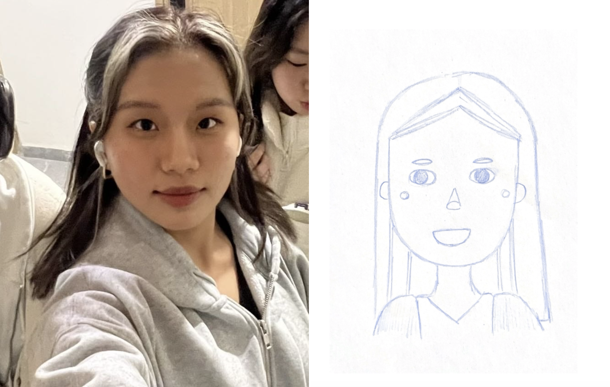
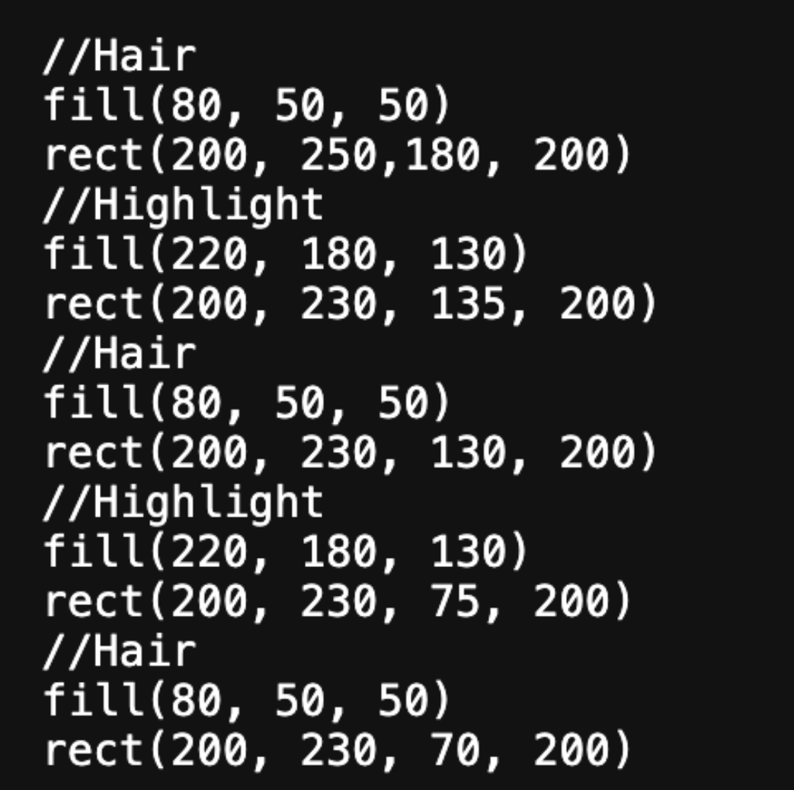
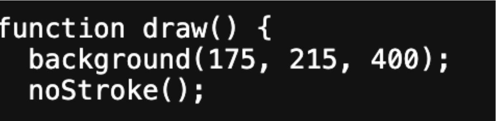

January 30, 2024
In this project, I learned how to utilize p5 to make a digital version of my pencil and paper artwork. The left bottom is the drawing of myself I drew by looking into my phone camera. In the process of doing so, I had the basic shapes I wanted to utilize in mind. In the drawing, I realized that the main shapes I would be using would be rectangles, triangles, circles, and ellipses.
During the process, I invested time refining the details in my digital art and organizing my code more. To do so, I learned how to layer the code in appropriate areas to ensure it is correctly placed within the respective sections of my digital code such as the face, hair, mouth, eye, etc. For instance, when adding highlights, I ensured the code was placed under the “hair” section, and considering the layering of the dark brown and blonde streaks, placing the code for each shape about whether it should appear on top or below another shape.
At certain times, a simple mistake led to an error in the code. For instance, I didn't capitalize the S in noStroke at first which led to an error.
At first, I needed time to adjust to the x and y axis, as sometimes I would be confused about the coordinates. For instance, in the triangle shape, there are three points total, and I had to make sure I was adjusting the x and y values in the right direction to get the right shape rather than a random isosceles or right triangle I didn't want. In the end, whenever I wanted to place something symmetric to the other side, I learned to use math. For example, when I placed the ears, I placed the left ear 130 from the right (x-coordinate), knowing that my total canvas is 400 x 400, I subtracted 400-130 to get my right ear x-coordinate. This helped speed up the process as I could get one solid answer rather than constantly adjusting the digits.
Exploratory programming helped me 7.5/10 while the reference helped me 2.5/10. Exploratory helped me visually see the changes, but if I were to completely rely on exploratory programming I would be confused by certain aspects of the shapes. For instance, I wouldn't know why there are 6 total values in a triangle, but because I had the reference, I knew that there are 3 points total. The references mainly served as a toolbox that I could refer to whenever I was exploring. I think I prefer exploratory programming currently as exploring can help me visualize the basics, however later on for more complicated codes, references would help me more.
I've recognized that digital art offers certain conveniences over traditional pencil and paper methods. When I manually drew my project, the lines lacked the precision of my digital art, resulting in a less refined outcome. As a result, I found that my digital art allowed for greater detail and accuracy in my project. In digital art, I could also have access to more colors, as in real life if I wanted to change colors, I would have to purchase more pens or mix colors, overall resulting in a larger process.
In contrast, hand drawing is simpler as I don't have to take into account as many factors as I do in my digital art. For example, I don't need to worry about layering. If I didn't like where something was positioned in my drawing, I could simply erase it and redraw it rather than having to consider the specific coordinate placement.
To select the colors for my digital art, I used a website called Color-Hex. This site provided me with the RGB codes for a range of colors, spanning from light to dark shades within a specific color. This process also assisted me in understanding how adjusting the values of red, yellow, and blue could enhance or diminish the intensity of a color when I wanted to make subtle changes.